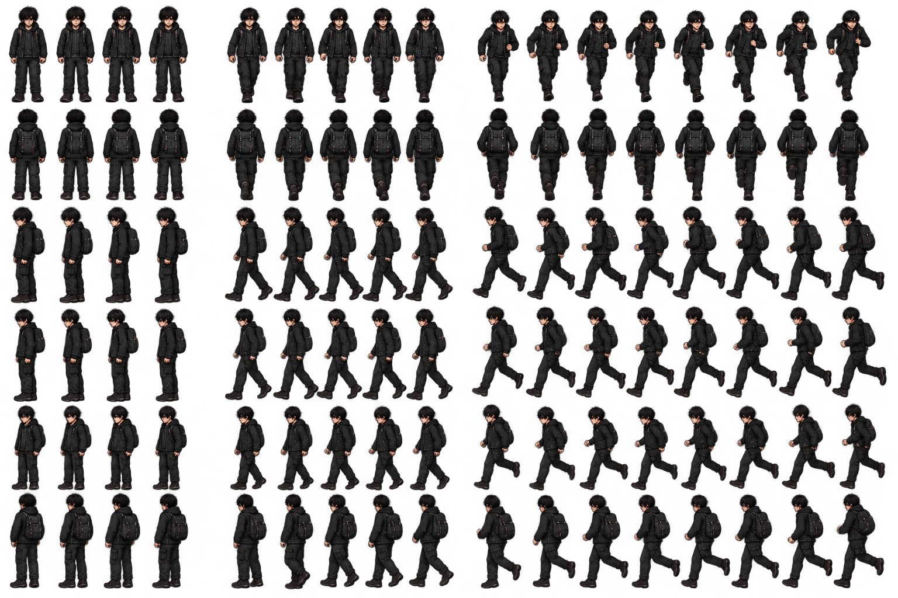

Sprite Lab
Prueba el personaje, cambia de dirección y ajusta el recorte de cada fotograma. También puedes cargar otra hoja de sprites.
Vista previa Pausado
Teclas: WASD o flechas para cambiar dirección; espacio para reproducir/pausar.
Recorte y animación
La hoja incluida tiene espacios irregulares entre sprites. Ajusta estos valores hasta que el recuadro encierre un personaje completo. Puedes seleccionar fotogramas directamente en la hoja para crear una animación incluso cuando están separados.
Secuencia inicial: 4 fotogramas. Pulsa “Añadir fotograma” y toca cada personaje en la hoja para crear tu propia secuencia.
Hoja: sprites.png
Hoja de sprites
Pulsa en la hoja para establecer el punto inicial X/Y. Para mayor precisión, amplía la página con el zoom del navegador.
